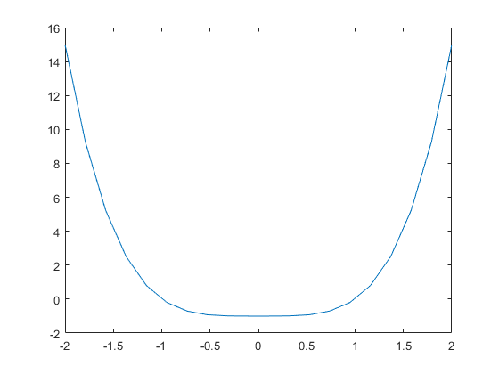

Contents
Copyright
close all; format compact; clc;
fprintf("Engineer: Rodrigo Becerril Ferreyra\n");
fprintf("Company: California State University, Long Beach\n");
fprintf("Project Name: Task 1\n");
fprintf("Start Date: 30 August 2020\n");
fprintf("End date: 30 August 2020\n");
Engineer: Rodrigo Becerril Ferreyra
Company: California State University, Long Beach
Project Name: Task 1
Start Date: 30 August 2020
End date: 30 August 2020
Task 1.1
fprintf("\nTask 1.1\n");
clear variables;
y = polyval([1, 3, 1], 1.3);
fprintf("(1.3)^2 + 3(1.3) + 1 = %6.3f.\n", y);
y = sin(30 * pi/180);
fprintf("sin(30 deg) = %6.3f.\n", y);
y = atan(1);
fprintf("arctan(1) = %6.3f.\n", y);
y = sin(acos(sqrt(3)/2));
fprintf("sin(arccos(sqrt(3)/2)) = %6.3f.\n", y);
Task 1.1
(1.3)^2 + 3(1.3) + 1 = 6.590.
sin(30 deg) = 0.500.
arctan(1) = 0.785.
sin(arccos(sqrt(3)/2)) = 0.500.
Task 1.2
fprintf("\nTask 1.2\n");
clear variables;
x = [pi/3, pi/6];
y = abs(x).*sin(x.^2);
fprintf("x = {"); fprintf("%6.3f ", x); fprintf("}\n");
fprintf("abs(x)sin(x^2) = {"); fprintf("%6.3f ", y); fprintf("}\n");
Task 1.2
x = { 1.047 0.524 }
abs(x)sin(x^2) = { 0.932 0.142 }
Task 1.3
fprintf("\nTask 1.3\n");
clear variables;
fprintf("sin(pi/2) = %6.3f.\n", sin(pi/2));
fprintf("cos(pi/3) = %6.3f.\n", cos(pi/3));
fprintf("tan(60 deg) = %6.3f.\n", tan(60 * pi/180));
fprintf("\n");
x = [1/2, 1];
y = log(x + sqrt(x.^2 + 1));
fprintf("x = {"); fprintf("%6.3f ", x); fprintf("}\n");
fprintf("ln(x + sqrt(x^2 + 1)) = {"); fprintf("%6.3f ", y); fprintf("}\n");
fprintf("\n");
x = [pi/4, pi/2];
y = x./((x.^2 + 1).*sin(x));
fprintf("x = {"); fprintf("%6.3f ", x); fprintf("}\n");
fprintf("x/((x^2 + 1)sin(x)) = {"); fprintf("%6.3f ", y); fprintf("}\n");
Task 1.3
sin(pi/2) = 1.000.
cos(pi/3) = 0.500.
tan(60 deg) = 1.732.
x = { 0.500 1.000 }
ln(x + sqrt(x^2 + 1)) = { 0.481 0.881 }
x = { 0.785 1.571 }
x/((x^2 + 1)sin(x)) = { 0.687 0.453 }
Task 1.4
fprintf("\nTask 1.4\n");
clear variables;
x = [0.3, 1/3, 0.5, 1/2, 1.65, -1.34];
fprintf("x = {"); fprintf("%6.3f ", x); fprintf("}\n");
fprintf("round(x) = {"); fprintf("%6.3f ", round(x)); fprintf("}\n");
fprintf("ceil(x) = {"); fprintf("%6.3f ", ceil(x)); fprintf("}\n");
fprintf("floor(x) = {"); fprintf("%6.3f ", floor(x)); fprintf("}\n");
fprintf("fix(x) = {"); fprintf("%6.3f ", fix(x)); fprintf("}\n");
Task 1.4
x = { 0.300 0.333 0.500 0.500 1.650 -1.340 }
round(x) = { 0.000 0.000 1.000 1.000 2.000 -1.000 }
ceil(x) = { 1.000 1.000 1.000 1.000 2.000 -1.000 }
floor(x) = { 0.000 0.000 0.000 0.000 1.000 -2.000 }
fix(x) = { 0.000 0.000 0.000 0.000 1.000 -1.000 }
Task 1.5
fprintf("\nTask 1.5\n");
clear variables;
x = [3, 4, 5];
y = [3, 4, -4, 6];
for yval = 1:1:4
for xval = 1:1:3
a = x(xval); b = y(yval);
fprintf("%2d rem %2d = %2d\t%2d mod %2d = %2d\n",...
a, b, rem(a, b), a, b, mod(a, b));
end
end
Task 1.5
3 rem 3 = 0 3 mod 3 = 0
4 rem 3 = 1 4 mod 3 = 1
5 rem 3 = 2 5 mod 3 = 2
3 rem 4 = 3 3 mod 4 = 3
4 rem 4 = 0 4 mod 4 = 0
5 rem 4 = 1 5 mod 4 = 1
3 rem -4 = 3 3 mod -4 = -1
4 rem -4 = 0 4 mod -4 = 0
5 rem -4 = 1 5 mod -4 = -3
3 rem 6 = 3 3 mod 6 = 3
4 rem 6 = 4 4 mod 6 = 4
5 rem 6 = 5 5 mod 6 = 5
Task 1.6
fprintf("\nTask 1.6\n");
clear variables;
x = 1 : 0.1 : 2;
fprintf("x = {"); fprintf("%6.3f ", x); fprintf("}\n");
y = polyval([1, 3, 0, 1], x);
fprintf("x^3 + 3x^2 + 1 = {"); fprintf("%6.3f ", y); fprintf("}\n");
y = sin(x.^2);
fprintf("sin(x^2) = {"); fprintf("%6.3f ", y); fprintf("}\n");
y = (sin(x)).^2;
fprintf("sin^2(x) = {"); fprintf("%6.3f ", y); fprintf("}\n");
y = sin(2.*x) + x.*cos(4.*x);
fprintf("sin(2x) + xcos(4x) = {"); fprintf("%6.3f ", y); fprintf("}\n");
y = x./(x.^2 + 1);
fprintf("x/(x^2 + 1) = {"); fprintf("%6.3f ", y); fprintf("}\n");
y = cos(x)./(1 + sin(x));
fprintf("cos(x)/(1 + sin(x)) = {"); fprintf("%6.3f ", y); fprintf("}\n");
y = 1./x + x.^3./(x.^4 + 5.*sin(x));
fprintf("1/x + x^3/(x^4 + 5sin(x)) = {"); fprintf("%6.3f ", y); fprintf("}\n");
Task 1.6
x = { 1.000 1.100 1.200 1.300 1.400 1.500 1.600 1.700 1.800 1.900 2.000 }
x^3 + 3x^2 + 1 = { 5.000 5.961 7.048 8.267 9.624 11.125 12.776 14.583 16.552 18.689 21.000 }
sin(x^2) = { 0.841 0.936 0.991 0.993 0.925 0.778 0.549 0.249 -0.098 -0.451 -0.757 }
sin^2(x) = { 0.708 0.794 0.869 0.928 0.971 0.995 0.999 0.983 0.948 0.895 0.827 }
sin(2x) + xcos(4x) = { 0.256 0.470 0.780 1.125 1.421 1.581 1.531 1.222 0.653 -0.134 -1.048 }
x/(x^2 + 1) = { 0.500 0.498 0.492 0.483 0.473 0.462 0.449 0.437 0.425 0.412 0.400 }
cos(x)/(1 + sin(x)) = { 0.293 0.240 0.188 0.136 0.086 0.035 -0.015 -0.065 -0.115 -0.166 -0.218 }
1/x + x^3/(x^4 + 5sin(x)) = { 1.192 1.134 1.090 1.056 1.027 1.002 0.980 0.957 0.935 0.912 0.889 }
Task 1.7
fprintf("\nTask 1.7\n");
clear variables;
x = 3 : 0.01 : 5;
y = x./(x + (1./x.^2));
fprintf("x = {"); fprintf("%7.5f ", x); fprintf("}\n");
fprintf("x/(x + x^-2)) = {"); fprintf("%7.5f ", y); fprintf("}\n");
Task 1.7
x = {3.00000 3.01000 3.02000 3.03000 3.04000 3.05000 3.06000 3.07000 3.08000 3.09000 3.10000 3.11000 3.12000 3.13000 3.14000 3.15000 3.16000 3.17000 3.18000 3.19000 3.20000 3.21000 3.22000 3.23000 3.24000 3.25000 3.26000 3.27000 3.28000 3.29000 3.30000 3.31000 3.32000 3.33000 3.34000 3.35000 3.36000 3.37000 3.38000 3.39000 3.40000 3.41000 3.42000 3.43000 3.44000 3.45000 3.46000 3.47000 3.48000 3.49000 3.50000 3.51000 3.52000 3.53000 3.54000 3.55000 3.56000 3.57000 3.58000 3.59000 3.60000 3.61000 3.62000 3.63000 3.64000 3.65000 3.66000 3.67000 3.68000 3.69000 3.70000 3.71000 3.72000 3.73000 3.74000 3.75000 3.76000 3.77000 3.78000 3.79000 3.80000 3.81000 3.82000 3.83000 3.84000 3.85000 3.86000 3.87000 3.88000 3.89000 3.90000 3.91000 3.92000 3.93000 3.94000 3.95000 3.96000 3.97000 3.98000 3.99000 4.00000 4.01000 4.02000 4.03000 4.04000 4.05000 4.06000 4.07000 4.08000 4.09000 4.10000 4.11000 4.12000 4.13000 4.14000 4.15000 4.16000 4.17000 4.18000 4.19000 4.20000 4.21000 4.22000 4.23000 4.24000 4.25000 4.26000 4.27000 4.28000 4.29000 4.30000 4.31000 4.32000 4.33000 4.34000 4.35000 4.36000 4.37000 4.38000 4.39000 4.40000 4.41000 4.42000 4.43000 4.44000 4.45000 4.46000 4.47000 4.48000 4.49000 4.50000 4.51000 4.52000 4.53000 4.54000 4.55000 4.56000 4.57000 4.58000 4.59000 4.60000 4.61000 4.62000 4.63000 4.64000 4.65000 4.66000 4.67000 4.68000 4.69000 4.70000 4.71000 4.72000 4.73000 4.74000 4.75000 4.76000 4.77000 4.78000 4.79000 4.80000 4.81000 4.82000 4.83000 4.84000 4.85000 4.86000 4.87000 4.88000 4.89000 4.90000 4.91000 4.92000 4.93000 4.94000 4.95000 4.96000 4.97000 4.98000 4.99000 5.00000 }
x/(x + x^-2)) = {0.96429 0.96463 0.96497 0.96530 0.96563 0.96595 0.96628 0.96659 0.96691 0.96722 0.96752 0.96783 0.96812 0.96842 0.96871 0.96900 0.96928 0.96956 0.96984 0.97012 0.97039 0.97065 0.97092 0.97118 0.97144 0.97169 0.97195 0.97220 0.97244 0.97269 0.97293 0.97316 0.97340 0.97363 0.97386 0.97409 0.97431 0.97454 0.97476 0.97497 0.97519 0.97540 0.97561 0.97582 0.97602 0.97623 0.97643 0.97663 0.97682 0.97702 0.97721 0.97740 0.97759 0.97777 0.97796 0.97814 0.97832 0.97849 0.97867 0.97884 0.97902 0.97919 0.97936 0.97952 0.97969 0.97985 0.98001 0.98017 0.98033 0.98049 0.98064 0.98079 0.98094 0.98109 0.98124 0.98139 0.98154 0.98168 0.98182 0.98196 0.98210 0.98224 0.98238 0.98251 0.98265 0.98278 0.98291 0.98304 0.98317 0.98330 0.98342 0.98355 0.98367 0.98379 0.98391 0.98403 0.98415 0.98427 0.98439 0.98450 0.98462 0.98473 0.98484 0.98495 0.98506 0.98517 0.98528 0.98538 0.98549 0.98559 0.98570 0.98580 0.98590 0.98600 0.98610 0.98620 0.98630 0.98640 0.98649 0.98659 0.98668 0.98678 0.98687 0.98696 0.98705 0.98714 0.98723 0.98732 0.98741 0.98749 0.98758 0.98766 0.98775 0.98783 0.98791 0.98800 0.98808 0.98816 0.98824 0.98832 0.98840 0.98847 0.98855 0.98863 0.98870 0.98878 0.98885 0.98893 0.98900 0.98907 0.98915 0.98922 0.98929 0.98936 0.98943 0.98950 0.98956 0.98963 0.98970 0.98976 0.98983 0.98990 0.98996 0.99003 0.99009 0.99015 0.99021 0.99028 0.99034 0.99040 0.99046 0.99052 0.99058 0.99064 0.99070 0.99076 0.99081 0.99087 0.99093 0.99098 0.99104 0.99109 0.99115 0.99120 0.99126 0.99131 0.99136 0.99142 0.99147 0.99152 0.99157 0.99162 0.99167 0.99172 0.99177 0.99182 0.99187 0.99192 0.99197 0.99202 0.99206 }
Task 1.8
fprintf("\nTask 1.8\n");
clear variables;
x = -2 : 0.1 : -1;
y = 1./x.^3 + 1./x.^2 + 3./x;
fprintf("x = {"); fprintf("%6.3f ", x); fprintf("}\n");
fprintf("x^-3 + x^-2 + 3/x = {"); fprintf("%6.3f ", y); fprintf("}\n");
Task 1.8
x = {-2.000 -1.900 -1.800 -1.700 -1.600 -1.500 -1.400 -1.300 -1.200 -1.100 -1.000 }
x^-3 + x^-2 + 3/x = {-1.375 -1.448 -1.529 -1.622 -1.729 -1.852 -1.997 -2.171 -2.384 -2.652 -3.000 }
Task 1.9
fprintf("\nTask 1.9\n");
clear variables;
x = linspace(0, 1, 200);
g = x.^3 + 1;
h = x + 2;
z = x.^2;
y = cos(pi.*x);
f = (y.*z)./(g.*h);
fprintf("f(200) = %6.3f\n", f(x==1));
Task 1.9
f(200) = -0.167
Task 1.10
fprintf("\nTask 1.10\n");
clear variables;
x = linspace(-2, 2, 20);
y = polyval([1, 0, 0, 0, -1], x);
plot(x, y);
Task 1.10

Task 1.11
fprintf("\nTask 1.11\n");
clear variables;
x = 0 : 0.1 : 3;
f = x.^3 .* cos(x + 1);
fprintf("f(2) = %6.3f\n", f(x==2));
fprintf("f(3) = %6.3f\n", f(x==3));
Task 1.11
f(2) = -7.920
f(3) = -17.648